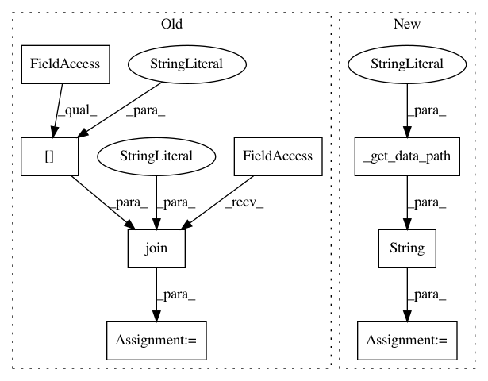

65d77bfdccc8b126f8e69d167df7d7713cf358fa,lib/matplotlib/backends/backend_qt5.py,NavigationToolbar2QT,configure_subplots,#NavigationToolbar2QT#,794
Before Change
self.canvas.drawRectangle(None)
def configure_subplots(self):
image = os.path.join(matplotlib.rcParams["datapath"],
"images", "matplotlib.png")
dia = SubplotToolQt(self.canvas.figure, self.canvas.parent())
dia.setWindowIcon(QtGui.QIcon(image))
dia.exec_()
After Change
self.canvas.drawRectangle(None)
def configure_subplots(self):
image = str(cbook._get_data_path("images/matplotlib.png"))
dia = SubplotToolQt(self.canvas.figure, self.canvas.parent())
dia.setWindowIcon(QtGui.QIcon(image))
dia.exec_()
In pattern: SUPERPATTERN
Frequency: 3
Non-data size: 8
Instances
Project Name: matplotlib/matplotlib
Commit Name: 65d77bfdccc8b126f8e69d167df7d7713cf358fa
Time: 2019-05-22
Author: anntzer.lee@gmail.com
File Name: lib/matplotlib/backends/backend_qt5.py
Class Name: NavigationToolbar2QT
Method Name: configure_subplots
Project Name: matplotlib/matplotlib
Commit Name: 65d77bfdccc8b126f8e69d167df7d7713cf358fa
Time: 2019-05-22
Author: anntzer.lee@gmail.com
File Name: lib/matplotlib/backends/backend_qt5.py
Class Name: FigureManagerQT
Method Name: __init__
Project Name: matplotlib/matplotlib
Commit Name: 65d77bfdccc8b126f8e69d167df7d7713cf358fa
Time: 2019-05-22
Author: anntzer.lee@gmail.com
File Name: lib/matplotlib/backends/backend_gtk3.py
Class Name:
Method Name: